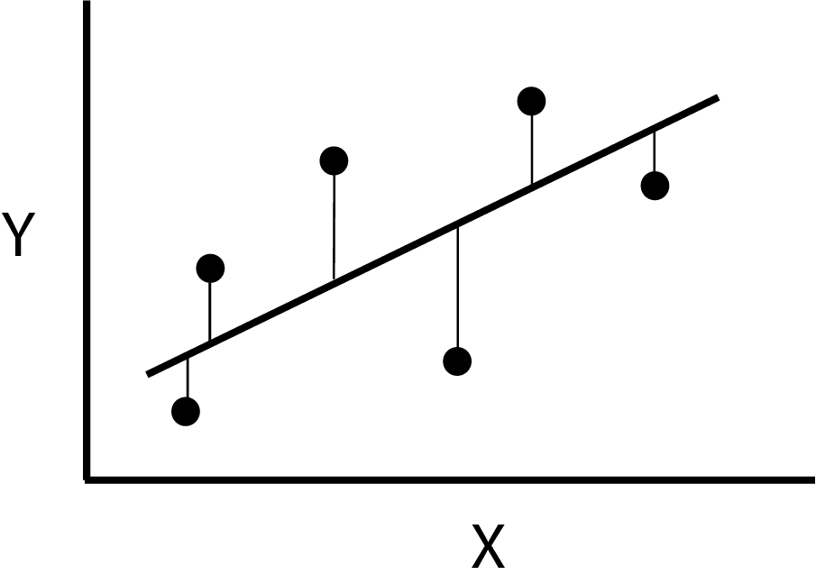

Describe the different motivations for regression modelling
Formulate a simple linear regression model
Understand the least squares method of parameter estimation and its equivalence to maximum likelihood
Interpret statistical output for a simple linear regression model
Calculate and interpret confidence intervals and prediction intervals for simple linear regression
Learning activities
This week’s learning activities include:
Learning Activity
Learning objectives
Preparation for week 2
Video 1
1, 2, 3
Readings
1, 2, 3, 4
Video 2
4, 5
Independent exercises
2, 4, 5
Live tutorial/discussion
2, 4, 5
Preperation for week 2
In week 2 you will be required to collaboratively complete some exercises. To do this, in week 1 you will be allocated into groups of 3-4 and you are encouraged to meet with your group in week 2 by zoom at a mutually beneficial time. Each group has their own discussion board, which you can use to help organise a meet up time. Interacting, discussing, and working through problems with your peers is an important skill for any biostatistician. This is also nice activity to get to know your peers in this online course.
Introduction to regression
This lecture introduces you to the purpose of regression models to answer three types of research questions: prediction; isolating the effect of a single predictor; and understanding multiple predictors. You will also learn what a simple linear regression looks like and learn about the method used to estimate it’s parameters.
Book Chapter 1. Introduction to section 1.3.3 (pages 1-4).
This reading supplements lecture 1 with a similar motivation for the need for regression models (which they refer to as multipredictor regression models) to answer three types of research questions: prediction; isolating the effect of a single predictor; and understanding multiple predictors. Nothing new is introduced in this reading, so its purpose is to allow you to become familiar with the writing style of the textbook that we follow in this course.
Book Chapter 3. Section 3.3 to 3.3.3 (pages 35-38).
This reading introduces the simple linear regression model and describes how to interpret each parameter of the model. This will be further explored in lecture 2. It also describes the error term between individual observations and the mean behaviour of the population – which is important as the assumptions of linear regression are all about the error term. Stata and R code corresponding to the output in this reading can be found below
Stata code and output
Show the code
use hersdata, clearsetseed 90896sample 10reg SBP age## (2,487 observations deleted)## ## ## Source | SS df MS Number ofobs = 276## -------------+---------------------------------- F(1, 274) = 11.70## Model | 4595.93381 1 4595.93381 Prob > F = 0.0007## Residual | 107671.294 274 392.960929 R-squared = 0.0409## -------------+---------------------------------- Adj R-squared = 0.0374## Total | 112267.228 275 408.244466 Root MSE = 19.823## ## ------------------------------------------------------------------------------## SBP | Coefficient Std. err. t P>|t| [95% conf. interval]## -------------+----------------------------------------------------------------## age | .6411057 .1874638 3.42 0.001 .2720533 1.010158## _cons | 93.87961 12.43407 7.55 0.000 69.40115 118.3581## ------------------------------------------------------------------------------
R code and output
Show the code
hers_subset <-read.csv("hers_subset.csv")lm.hers <-lm(SBP ~ age, data = hers_subset)summary(lm.hers)## ## Call:## lm(formula = SBP ~ age, data = hers_subset)## ## Residuals:## Min 1Q Median 3Q Max ## -49.193 -14.346 -1.578 13.391 57.961 ## ## Coefficients:## Estimate Std. Error t value Pr(>|t|) ## (Intercept) 93.8796 12.4341 7.55 6.48e-13 ***## age 0.6411 0.1875 3.42 0.000722 ***## ---## Signif. codes: 0 '***' 0.001 '**' 0.01 '*' 0.05 '.' 0.1 ' ' 1## ## Residual standard error: 19.82 on 274 degrees of freedom## Multiple R-squared: 0.04094, Adjusted R-squared: 0.03744 ## F-statistic: 11.7 on 1 and 274 DF, p-value: 0.0007219confint(lm.hers)## 2.5 % 97.5 %## (Intercept) 69.4011476 118.358063## age 0.2720533 1.010158
Note
This table does not use the complete HERS dataset, rather it takes a random sample of 10% of the data. In Stata this is achieved by using set seed 90896 and sample 10.
Here the set seed 90896 ensures that the random sample is reproducible. i.e. we draw the same random sample each time. As random sampling is hard to replicate across statistical programs, to get the same output in R we needed to take the random sample in Stata and then import this subset of the data into R. A copy of this subset is provided in the data resources titled hers_subset.csv
Notation
Before continuing further with the theory of linear regression it is helpful to see some of the variations in notation around regression formula. In general greek letters are used for true population values, whereas the latin (or modern) alphabet is used to denote estimated values from a sample. The hat symbol (^) can also be used to indicated estimated or fitted values. Subscripts on the \(Y\)’s and \(x\)’s indicate the observation number. Some examples of the different ways regression notation is used in this course is shown below. Don’t worry if some of these terms are not familiar to you yet, they will be introduced to you in due course.
\(e\) or \(\hat{\varepsilon}\) called “residual” or “residual error”
Variance of error
\(\sigma^2\), \(\text{Var}(\varepsilon)\)
Mean square error, MSE, \(\hat{\sigma}^2\), \(\hat{\text{
Var}}(\varepsilon)\), \(s^2\)
Properties of ordinary least squares
There are many ways to fit a straight line to data in a scatterplot. Linear regression uses the principle of ordinary least squares, which finds the values of the parameters (\(\beta_0\) and \(\beta_1\)) of the regression line that minimise the sum of the squared vertical deviations of each point from the fitted line. That is, the line that minimises: \[ \sum(Y_i - \bar{Y}_i)^2 = \sum(Y_i - (\hat{\beta}_0 + \hat{\beta}_1x_i))^2\]
This principle is illustrated in the diagram below, where a line is shown passing near the value of \(Y\) for six values of \(x\). Each choice of values for \(\hat{\beta}_0\) and \(\hat{\beta}_1\) would define a different line resulting in different values for the vertical deviations. There is however one pair of parameter values that produces the least possible value of the sum of the squared deviations called the least squares estimate.

Ordinary least squares minimises the square of the vertical distance between data and the line
In the scatterplot below, you can see how the line adjusts to points in the graph. Try dragging some of the points, or creating new points by clicking in an empty area of the plot, and see how the equation changes. In particular, notice how moving up and down a point at the extremes of the \(x\) scale, affects the fitted line much more than doing the same to a point in the mid-range of the \(x\) scale. We will see later that this is the reason for caution when we have outliers in the data.
Interactive Regression Plot
Interactive Regression Plot
Linear regression uses least squares to estimate parameters because when regression assumptions are met (more on this later) the estimator is BLUE: Best Linear Unbiased Estimator. Unbiased means that over many repetitions of sampling and fitting a model, the estimated parameter values average out to equal the true “population” parameter value (i.e. \(\text{E}[\hat{\beta}_1]=\beta_1\)). Unbiasedness does not mean that all parameter estimates are close to the true value—in fact it says nothing about the sample-to-sample variability in the parameter estimates, since that is a precision issue. The “linear” means that the class of estimators are those that can be written as linear combinations of the observations \(Y\). More specifically, any linear unbiased estimator of the slope parameter \(\beta_1\) can be written as \(\sum_{i=1}^n a_iY_i\) where the values of \((a_1,...a_n)\) must be such that \(\text{E}(\sum_{i=1}^n a_iY_i)=\beta_1\). This was important when computational power was limited as linear estimators can be easily computed. The “best” component of BLUE says that least squares estimators are best in the sense of having the smallest variance of all linear unbiased estimators. That is, they have the best precision or they are the most efficient.
The mathematical theorem and proof that the least squares estimator is the best linear unbiased estimator (BLUE) is called the Gauss-Markov theorem. The least squares estimator also identical to the maximum likelihood estimator when the regression assumptions are met.
Chapter 3. Section 3.3.5 to 3.3.9 (pages 39-42).
The reading describes the basic properties of regression coefficients including: their standard error; hypothesis testing; confidence intervals; and their involvement in the calculation of \(R^2\).
Regression in Stata and R
The lecture below (which you can watch for either Stata or R (or both if you are keen)) shows how to carry out and interpret the results of a simple linear regression in statistical software. It then shows how to calculate and interpret confidence and prediction intervals.
The following exercise will allow you to test yourself against what you have learned so far. The solutions will be released at the end of the week.
Using the dataset hers_subset.csv dataset, use simple linear regression in R or Stata to measure the association between diastolic blood pressure (DBP - the outcome) and body mass index (BMI - the exposure).
Summarise the important findings by interpreting the relevant parameter values, associated P-values and confidence intervals, and \(R^2\) value. Three to four sentences is usually enough here.
From your regression output, calculate by how much the mean DBP changes for a 5kgm-2 increase in BMI? Can you verify this by modifying your data and re-running your regression?
Manually calculate the \(\beta_1\) standard error, the t-value, p-value and \(R^2\)
Based on your regression, make a prediction for the mean diastolic blood pressure of people with a BMI of 28kgm-2.
Calculate and interpret a confidence interval for this prediction.
Calculate and interpret a prediction interval for this prediction.
Live tutorial and discussion
The final learning activity for this week is the live tutorial and discussion. This tutorial is an opportunity for you to to interact with your teachers, ask questions about the course, and learn about biostatistics in practice. You are expected to attend these tutorials when possible for you to do so. For those that cannot attend, the tutorial will be recorded and made available on Canvas. We hope to see you there!
Summary
This week’s key concepts are:
Regression models have three main purposes: prediction; isolating the effect of a single exposure; and understanding multiple predictors. The purpose of a regression model will influence the procedures you follow to build a regression model, and this will be explored more in week 8.
Simple linear regression measures the association between a continuous outcome and a single exposure. This exposure can be continuous, or binary (in which case simple linear regression is equivalent to a two-sample students t-test).
The relevant output to interpret and report from a simple linear regression includes:
The p-value for the exposure’s regression coefficient (slope)
The effect size of the exposure regression coefficient and 95% confidence interval
The amount of variation in the outcome explained by the exposure (\(R^2\))
The confidence interval for a prediction represents the uncertainty associated with an estimated predicted mean. Conversely, the prediction interval represents the uncertainty associated with the spread of observations around the predicted mean.